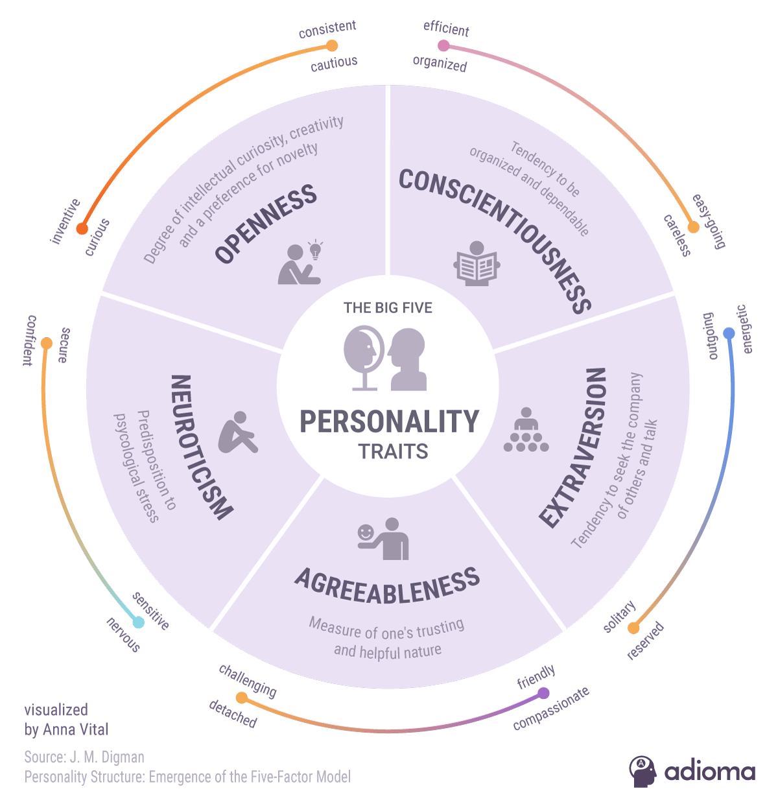

Introduction to Big 5
What is the Big 5?
The Big 5, also called the Five Factor Model (FFM), is a framework meant to comprehensively capture human personality by reducing it to five fundamental traits: Openness, Conscientiousness, Extraversion, Agreeableness, and Neuroticism (OCEAN). Its origin is based on the lexical hypothesis, in other words, the assumption that all human personality inevitably gets encoded in human language, and its development arises from factor analysis of a broad repository of personality adjectives from many different languages (for instance, in English, we have words like "effervescent" or "cheerful" to describe Extraversion, and "assiduous" or "diligent" to describe Conscientiousness) that coalesces said repository into 5 quasi-independent clusters of traits, also known as Factors or Dimensions.
Over time, although the five main factors remain relatively consistent, several variations of the Big 5 have been developed including:
- NEO IPIP-R (300-item version of Big 5 that offers more granularity by splitting each main Big 5 dimension into 6 subfacets)
- BFAS (100-item version of Big 5 that splits each main dimension into 2 complementary subfacets, and emphasizes conceptual parsimony and reduction of redundancy while still being comprehensive)
- HEXACO (Big 5 variation that adds an additional dimension + Honesty/Humility (also called the Big 6))
What are the applications/usefulness of the Big 5?
Big 5 is much more useful, reliable, and scientifically robust than other popular but pseudoscientific personality systems, such as notably MBTI and Enneagram. This is because unlike the latter, Big 5 is rooted in empirical phenomena (mainly studies of language), doesn't have arbitrary axioms or definitions, is much more well-defined and consistent, and has been shown repeatedly to have powerful predictive value in various domains, including but not limited to therapy, mental illness, artistic accomplishment, relationship styles/habits in romantic relationships, interpersonal interaction styles, and political beliefs. The Big 5 traits has been shown to have intimate ties with neuroscience and brain structure, for instance, people with High Openness are less likely to have high levels of Latent Inhibition.
Summary of Each Big 5 Dimension (Negative and Positive Poles)
Here is a list of sample personality adjectives to describe each Big 5 dimension.
| Dimension | Low scorers | High scorers |
|---|---|---|
| Openness | Practical, Simple, Concrete, Quotidian | Curious, Knowledgeable, Sophisticated, Creative |
| Conscientiousness | Spontaneous, Vacillating, Scattered, Impulsive | Organized, Disciplined, Dutiful, Fastidious |
| Extraversion | Reserved, Quiet, Reclusive, Reticent | Sociable, Outgoing, Bubbly, Energetic |
| Agreeableness | Cruel, Harsh, Indifferent, Blunt | Amicable, Acquiescent, Polite, Warm |
| Emotional Stability | Cantankerous, Moody, Impatient, Sensitive | Calm, Placid, Level-headed, Pleasant |
For a more concise and visual version, see the infographic below.
Cursory Big 5 test (25 questions)
Rate how accurately each statement describes you. IMPORTANT: Answer honestly. This is an objective personality screening tool, not a Buzzfeed quiz meant to flatter. On the other hand, this short test is just a demonstration that does NOT replace a professional personality evaluation by a licensed psychologist.